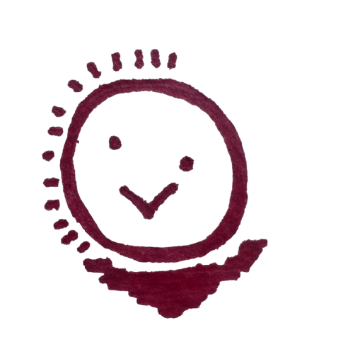
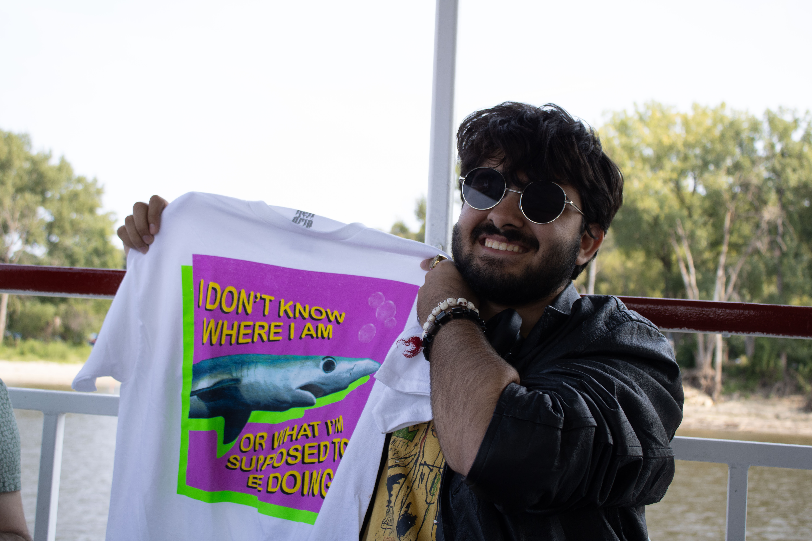

Rahim Hamid
A Collection of Politically Relevant Happy Little Accidents
My art is the means by which I make sense of the reality of living as an outsider, politically and culturally, in both my home country of Pakistan and during my current stay in the United States. In a contemporary political climate rife with hatred, my work directly explores my experiences of alienation, grief and disillusionment with the failing liberal democracies and dictatorships that I have been the subject of throughout my life. These feelings take artistic form in everything from large paintings to sculptures to public displays and performances which all outline the specific parts of my interests in Pakistani history, figural representation of the self and political, and understanding contemporary fascism across the globe.
I often use myself as a subject in my work through self-portraiture, as a base model for my sculptures, or as a subject in performances. The use of self in my work is important, with it primarily serving as a forceful centering of myself as a queer and disenfranchised artist of the "Third World" within art practices where my identities seem absent in a largely Western art historical canon. It is also a re-assertion of my post-colonial personhood, free of the overt colonization of my ancestors past yet still bound through restrictions on capital, social mobility and immigration which induces a continual sense of exclusion in me. My work owes a great debt to contemporary artists working to explore the nuances of living in a paradoxically globalized yet restricted world such as Doris Salcedo and Rashid Rana.
I aim to generate within viewers the same feelings of confusion, discomfort and existentialism that are my daily companions. I believe that exposure to the rawness and reality of someone else's way of living is the most powerful way to start building the empathy needed for change to take root in a hostile and disordered political system. I speak to an international audience, working with specific cultural symbols to get across universal messages in my work. With this goal, I use all the materials at hand to keep speaking to what my lived reality is and continues to be in an alien and alienating world.
